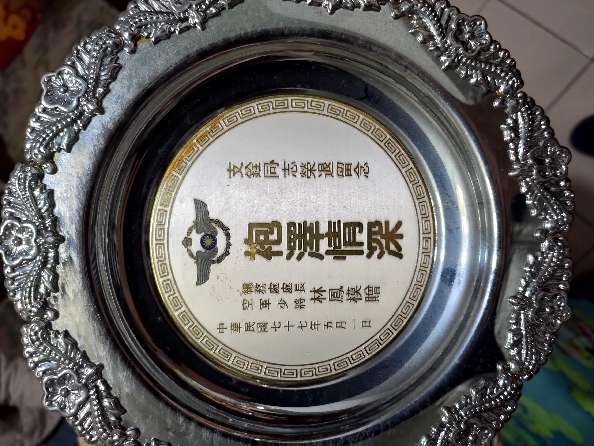

今天約了早上 11:00 第二次與主治醫生會面，預先想好的問題是爺爺腦部的損傷程度、昨晚打的強心針、還有安寧照護的可能性等，總共問了以下問題：
問：MRI 結果顯示目前的腦部的受損狀況如何？很嚴重嗎？
答：今天醫生不像第一次會面時講的比較保守了，直接說要能夠清醒的機率很低問：之前有聽護士說爺爺的瞳孔反射微弱，加上這次腦幹中風似乎受損很嚴重，這樣算是腦死的狀況嗎？
答：沒有沒有，這樣還沒有到腦死，如果是腦死的話一兩天內就會走了問：昨天跟前天晚上爺爺都有心跳驟停的狀況，有補一劑強心針，想問這種心跳驟停的狀況之後會時常發生嗎？另外強心針是可以一直打的嗎？
答：心跳驟停這個狀況只要發生一次，之後就會常常發生，強心針的話就是一種治療的方式，搭配升壓藥一起使用讓病人的心臟可以跳回來問：爺爺目前的狀況符合安寧照護嗎？
答：當然符合，如果有需要的話會知會安寧小組，之後安排時間跟家屬共同討論
後來零星又提到了強心針之類的問題，這時令我印象最深刻的是一聽到強心針，爺爺就突然動得很激烈，右手、胸部、頭都有很明顯的移動，這時候我覺得很難過，在病人的床前討論安寧照護、抉擇是否要繼續打強心針的事情，不知道爺爺聽完後認為是想打強心針或不想打，雖然我有分別問他想打或不想打的話可以動動右手讓我們知道，但其實訊號也沒有很明顯，我也只能跟爺爺說沒事沒事放鬆，我們會做出讓爺爺不那麼辛苦的決定的
最後來回大概討論了十分多鐘，達成一些結論是：
- 如果有呼吸管堵塞等問題，需要更換的狀況下，決定不再次插管
- 藥物注射先持續使用，包括升壓藥、強心針等
- 醫院會聯絡安寧小組跟我們約時間一起討論 (沒想到後來下午兩點多就接到醫院的電話說約好隔天的下午兩點招開會議討論)
很感謝這時旁邊的護士一直都直接在手上記錄下我們討論的內容，主治醫生也沒有第一次會面時的這麼冷漠不屑，能感覺得到他比較耐心的解釋
- 中午
決定要走安寧照護這條路後，該跟奶奶告知目前的狀況了，之前奶奶來病房看過爺爺兩次，每次都很激動地按摩他的手、大力拍他的臉、胸，試圖想要叫醒他，每次看完出來都會說爺爺的手腳都在動，還緊抓住他的手，應該很快就會清醒了
「爺爺這次是腦中風+心臟衰竭，狀況越來越不好，可能只剩兩三天就要走了」，我只好開門見山的打字給奶奶看，奶奶看完後說怎麼可能之前去爺爺都手腳都動得很厲害，「那個是肌肉反射，爺爺現在腦部受損沒有意識」，我也只能把醫生的觀點跟奶奶說，雖然奶奶一開始不相信，但過了一會他似乎慢慢接受了，開始會碎念這樣一個人要怎麼辦… 後來，不知道為什麼拿出了一堆東西叫我不要亂丟，像是舅公當初搬去美國時，送給爺爺的一個台灣形狀的花盆？還有爺爺在民國 77 年退役頒發的獎牌，那時我都還沒出生呢
- 晚上
晚上我跟大姑姑一樣七點去看爺爺，這時大姑姑有打 wechat 給在大陸的爸爸遠端通話，但很明顯他對這件事沒有想要關心的意思，後來又因為以前的事情在那邊吵起來，最後直接掛電話，還記得上次爺爺膀胱癌住院他有回台灣來照顧，結果也是弄到半夜四五點在那邊不爽吵架就大罵離開，真的是每次有他參與的場合就在幫倒忙